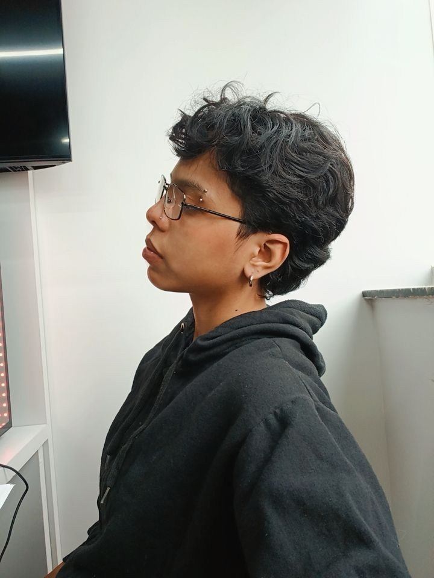
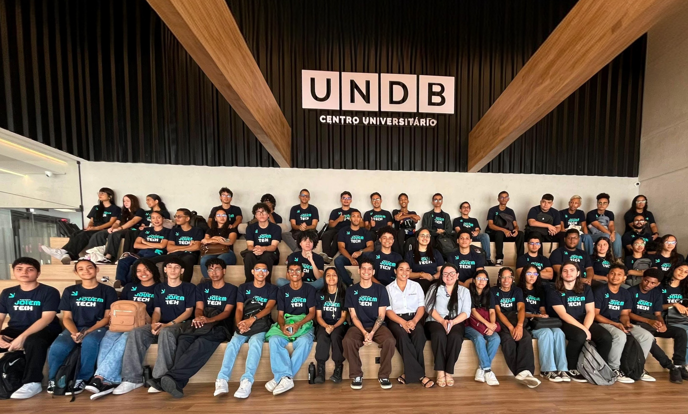
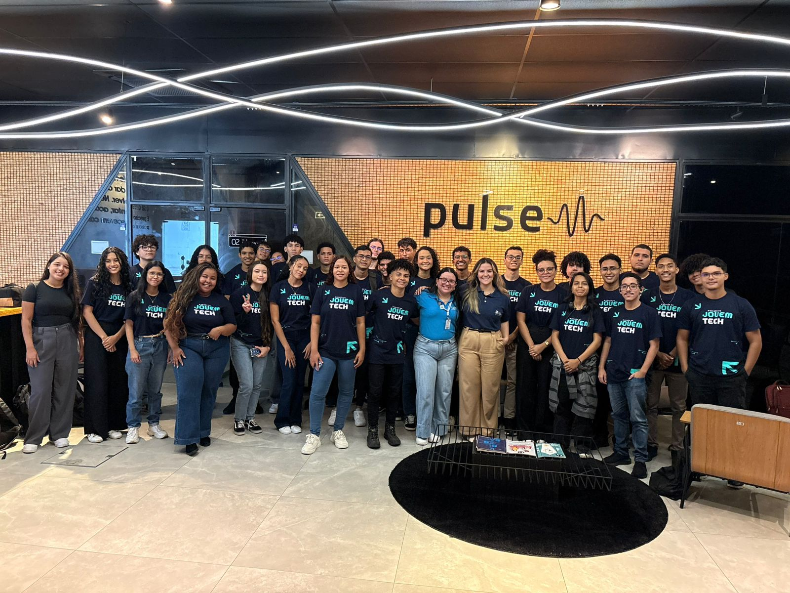

KESSYA WDANMYLLA

BACK-ENDBreve descrição do desenvolvedor 1. Apaixonado por criar interfaces intuitivas e experiências de usuário envolventes.
Bem-vindo ao portal da nossa turma do Jovem Tech. Aqui você encontra os projetos, portfólios e os perfis dos novos talentos prontos para transformar o mercado de tecnologia.
O Jovem Tech nasceu com a missão de democratizar o acesso à educação tecnológica. O programa oferta 60 bolsas para jovens de 18 a 24 anos recém-formados no ensino médio da rede pública ou bolsistas integrais da rede privada. para o mercado do futuro, uma iniciativa estratégica criada para transformar o ecossistema de tecnologia no Maranhão, preparando os estudantes para as reais demandas do mercado de trabalho.
A formação do Jovem Tech combina autoestudo guiado, encontros práticos e desenvolvimento de
projetos reais, preparando os alunos para os desafios do mercado de tecnologia.
A jornada acontece em parceria com a plataforma Alura e é estruturada em etapas bem
definidas:
Os primeiros 3 meses todos os estudantes iniciam por uma trilha comum e intensiva de fundamentos. Nessa fase inicial, são construídos os pilares essenciais da programação: lógica computacional, estruturação e estilização web com HTML5 e CSS3, interatividade com JavaScript e controle de versão com Git e GitHub. Após concluir a base unificada, cada aluno direciona seus estudos para a área que mais se alinha ao seu perfil e objetivos de carreira:
O Jovem Tech é estruturado em polos de aprendizado, no HUB da UNDB e no anexo PULSE, onde ocorre a formação técnica e formação comportamental e estratégica. Enquanto um turno é dedicado às linguagens de programação e aos estudos na plataforma Alura, os contraturnos funcionam como preparação para a rotina real das empresas de tecnologia. Os contraturnos acontecem em ambos os anexos, os estudantes passam por treinamentos estruturados em três pilares fundamentais: Metodologias Ágeis e de Inovação, Soft Skills e Power Skills (Habilidades Comportamentais) e Lifelong Learning.

ANEXO PULSE: localizado no bairro da cohama, é onde acontecem também os contraturno, realizados nos dias de quarta e sexta feira

Conheça os talentos da nossa turma. Navegue pelos perfis, descubra as áreas de foco de cada estudante (front-end, back-end, dados) e acesse diretamente seus portfólios, projetos no github e contatos profissionais.

BACK-ENDBreve descrição do desenvolvedor 1. Apaixonado por criar interfaces intuitivas e experiências de usuário envolventes.
Breve descrição do desenvolvedor 2. Especialista em lógica de negócios e construção de sistemas robustos.
Ao longo do curso, desenvolvemos soluções reais que combinam lógica de programação, arquitetura limpa e foco nos desafios do ecossistema local, demonstrando nossa capacidade de aplicar o conhecimento adquirido.
Foi criado dois sistemas independentes desenvolvido para atender às necessidades do Grupo Mateus e do Porto do Itaqui, integrando funcionalidades de logística, controle de estoque e gestão de vendas. O objetivo é otimizar processos internos, melhorar a eficiência operacional. O sistema é modular, permitindo que cada empresa utilize apenas os módulos relevantes para suas operações, garantindo flexibilidade e escalabilidade, as tecnologias utilizadas foram:
Landing page responsiva e centralizadora desenvolvida para dar visibilidade aos perfis profissionais, competências e entregas da turma, as tecnologias utilizadas incluem foram:
Respostas rápidas sobre a turma e como funciona a contratação e dinâmica do programa
Para contratar um desenvolvedor da turma, você pode entrar em contato diretamente com o estudante através do e-mail ou LinkedIn fornecido no perfil dele. Além disso, você pode acessar a galeria de desenvolvedores na seção "Galeria Devs" para conhecer os perfis e portfólios dos estudantes.
Os desenvolvedores formados na turma do Jovem Tech possuem um nível de autonomia significativo, sendo capazes de trabalhar em projetos de forma independente, aplicar boas práticas de desenvolvimento e colaborar efetivamente em equipes. No entanto, o nível de autonomia pode variar dependendo da experiência individual e da complexidade do projeto.
Os desenvolvedores da turma do Jovem Tech se especializam em diferentes áreas, incluindo front-end, back-end e análise de dados. Cada estudante escolhe sua trilha de estudo após a fase inicial de nivelamento, permitindo que eles se aprofundem na área que mais se alinha com seus interesses e objetivos de carreira.
Para participar das próximas turmas do Jovem Tech, é necessário atender aos critérios de elegibilidade estabelecidos pelo programa, que incluem idade, formação educacional e outros requisitos específicos. Fique atento aos anúncios oficiais do programa para informações sobre inscrições e processos seletivos.
Sim, o programa Jovem Tech oferece bolsas de estudo para os participantes selecionados, tornando a formação acessível e gratuita para os jovens que atendem aos critérios de elegibilidade.